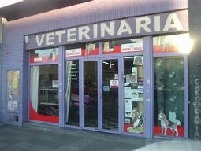

En nuestra veterinaria encontraras un equipo de profesionales con una amplia experiencia en el sector de la veterinaria. Nuestro objetivo es ofrecer un servicio de calidad a nuestros clientes y sus mascotas, tenemos una experiencia profesional de mas de 10 años.
Parque de los Pueblos de America 18600 motril Granada
Telefono: 958 123 456